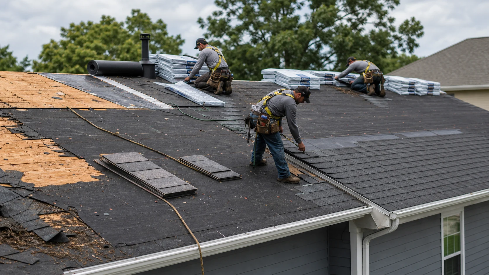
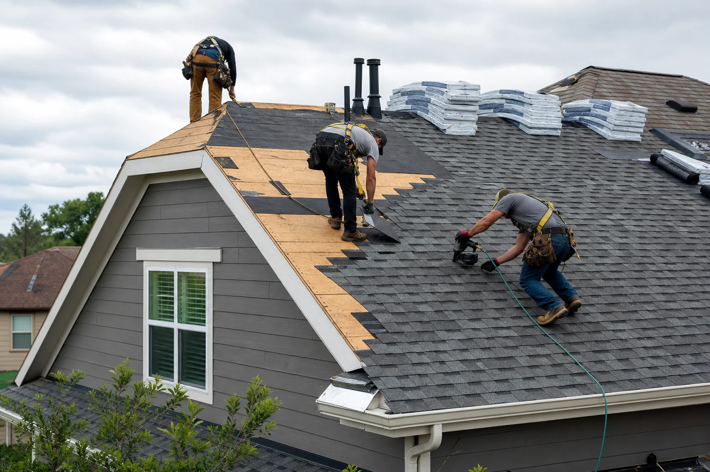

Tear-off and decking
Removal of old material, decking review, wood replacement discussion, and surface preparation.
Compare independent providers for full tear-offs, material upgrades, ventilation corrections, flashing work, and complete roof system rebuilds.
A complete roof replacement includes more than new shingles. Providers should evaluate decking, underlayment, ventilation, roof edges, flashing, valleys, penetrations, cleanup, and warranty terms.
RoofLink helps you submit the right details once so replacement providers can respond with a useful conversation about timing, materials, scope, and property protection.

These examples help you describe the request clearly before independent providers follow up.
Removal of old material, decking review, wood replacement discussion, and surface preparation.
Synthetic underlayment, ice and water protection where appropriate, drip edge, starter, field shingles, and ridge.
Intake and exhaust balance, pipe boots, vents, chimney flashing, walls, valleys, and transitions.
RoofLink helps organize the details. You still choose who to speak with, what to verify, and whether to hire.
Share roof age, known leaks, prior repairs, attic ventilation issues, and whether insurance or HOA rules may apply.
Compare shingle grades, impact resistance, underlayment upgrades, ventilation changes, color, and expected timeline.
Make sure tear-off, disposal, decking terms, flashing, cleanup, warranty, and payment milestones are written clearly.
Ask how landscaping, siding, driveways, attic items, pets, and daily access will be protected during production.

Provider replies are useful when they help you understand scope, timing, risks, and next steps. Use the first conversation to ask direct questions before approving work.
Written scope detailA strong provider response explains layers, flashing, decking, ventilation, cleanup, exclusions, and warranty.
Material recommendationAsk why a material fits the slope, weather exposure, budget, and expected ownership timeline.
Production planCompare crew timing, delivery, disposal, weather backup, nail sweep, and final walkthrough.
Some roof problems are not emergencies, but these signs usually deserve faster provider follow-up.
Leaks in multiple locations often mean the system is aging beyond isolated fixes.
Cracking, curling, granule loss, and broken tabs can make repair unreliable.
Soft spots, sagging areas, and moisture-damaged wood require a bigger conversation.